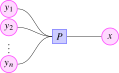
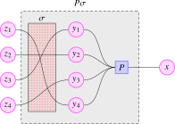

While the notion of non-colored operads introduced previously is elegant, it is insufficient for our purposes. To illustrate this, let us discuss the algebraic structure of an associative algebra \(A\) acting on some module \(M\). To encode such an action, we need a map in \(C\) of the form \[ \mathrm {act}\colon A \otimes M \to M, \qquad (a,m) \mapsto am, \] and its source is not a tensor-power of a single object. More generally, given a collection of objects \((A_x)\) in \(C\) we would like to have some notion of operad which can deal with operations of the form \[ P\colon A_{y_1} \otimes \dots \otimes A_{y_n} \to A_x \] for certain choices of indices \(y_1, \dots , y_n,x\). This leads to the following ‘multicolored’ version of Definition 12.1.1:
Definition 12.2.1. A colored operad (or multicategory) \(\Oo \) consists of the following structure:
- There is a set \(\Oo ^{\simeq }\) of colors (sometimes also called the objects of \(\Oo \));
- For colors \(x, y_1, \dots , y_n \in \Oo ^{\simeq }\), there is a set \(\Oo ((y_1, \dots , y_n); x)\) of multimorphisms from \((y_1, \dots , y_n)\) to \(x\). We refer to \(x\) as the output color and to the \(y_i\) as the input colors;
- If we are additionally given colors \(z^i_j \in \Oo ^{\simeq }\) for \(i = 1, \dots , n\) and \(j = 1, \dots , k_i\), there is a composition map \[ \circ \colon \Oo ((y_1, \dots , y_n); x) \times \prod _{i=1}^n \Oo ((z^i_1, \dots , z^i_{k_i}); y_i) \to \Oo ((z^1_1, \dots , z^1_{k_1}, \dots , z^n_1, \dots , z^n_{k_n});x). \]
- For every color \(x\) there is an identity operation \(\id _x \in \Oo ((x);x)\);
- Composition should be unital and associative like before;
- For every permutation \(\sigma \in \Sigma _n\) there is a ‘permutation isomorphism’ \[ \Oo ((y_1, \dots , y_n); x) \iso \Oo ((y_{\sigma (1)}, \dots , y_{\sigma (n)}); x), \qquad P \mapsto P\sigma , \] which is compatible with the multiplication in the group \(\Sigma _n\) and is furthermore compatible with composition in \(\Oo \). We leave a precise formulation of this condition to the reader; see Chapterexercise 12.1.
We may pictorially think of a multimorphism \(P\) from \((y_1, \dots , y_n)\) to \(x\) as follows:

The composition of multimorphisms may then be illustrated as follows (with \(n = k_1 = 3\), \(k_2 = 0\) and \(k_3 = 2\)):
![On the left, five circular nodes: $z^1_1$, $z^1_2$, $z^1_3$ and, after a gap, $z^3_1$ and $z^3_2$. The first three are wired into a rectangular node $Q_1$ and the last two into a rectangular node $Q_3$. Between them sits a node $Q_2$ with no input wires at all, since it is nullary. The outputs of $Q_1$, $Q_2$ and $Q_3$ are circular nodes $y_1$, $y_2$ and $y_3$, which are in turn the three inputs of a rectangular node $P$ whose single output is a circular node $x$. A dashed box enclosing the three $Q_i$, the three $y_j$ and $P$ is labelled $P(Q_1,Q_2,Q_3)$.](../../../_assets/diagrams/tikzpicture-e5d60f6b088f.svg)
The identity multimorphism will be pictured as follows:
Finally, we have the permutation operation on multimorphisms, which we may picture as follows (with \(z_i := y_{\sigma (i)}\)):

Definition 12.2.2. If \(\Pp \) is another colored operad, then a morphism \(f \colon \Oo \to \Pp \) of colored operads consists of a map of sets \(f\colon \Oo ^{\simeq } \to \Pp ^{\simeq }\) on colors and for all colors \(x,y_1,\dots ,y_n \in \Oo ^{\simeq }\) a map \[ f\colon \Oo ((y_1,\dots ,y_n);x) \to \Pp ((fy_1,\dots ,fy_n);fx) \] on multimorphisms, in such a way that \(f\) preserves identity operations, composition of operations and permutations.
Let us go through some examples of colored operads:
Example 12.2.3 (From non-colored to colored). Every non-colored operad \(\Oo \) may be regarded as a colored operad with a single object: we take \(\Oo ^{\simeq } := \{*\}\) and we set \[ \Oo (\underbrace {(*, \dots , *)}_{n \text { times}}; *) := \Oo (n). \] From now on, we will abuse notation and regard non-colored operads as colored operads in this way. In particular, we obtain colored operads \(\Assoc \), \(\Comm \), \(\Lie \) and \(\Ee _k\).
Warning 12.2.4. While \(\Comm \) is still terminal as a colored operad, \(\Triv \) is no longer initial as a colored operad: the initial colored operad has an empty set of colors.
Example 12.2.5 (From colored to non-colored). Conversely, for every colored operad \(\Oo \) and every color \(x \in \Oo ^{\simeq }\) we obtain a non-colored operad \(\Oo _x\) by setting \[ \Oo _x(n) := \Oo (\underbrace {(x, \dots , x)}_{n \text { times}}; x). \] The operad \(\Oo _x\) comes with an obvious inclusion map \(\Oo _x \hookrightarrow \Oo \) of colored operads.
Example 12.2.6 (Trivial operad on a 1-category). Let \(C\) be a 1-category. We define a colored operad \(\Triv _C\), called the trivial operad generated by \(C\), as follows: its colors are the objects of \(C\), and its multimorphisms are given by \[ \Triv _C((y_1, \dots , y_n);x) \quad := \quad \begin {cases} \Hom _C(y_1,x) & \text {if $n = 1$,} \\ \emptyset & \text {otherwise.} \end {cases} \] The identity operations are the identity morphisms of \(C\), the composition is the composition in \(C\), and the permutation operations are trivial since \(\Sigma _1\) is the trivial group. In other words, \(\Triv _C\) has no operations besides the unary ones, and these are precisely the morphisms of \(C\).
The trivial operad \(\Triv \) is the special case \(C = *\), while \(C = \emptyset \) gives the initial colored operad from the warning above.
Example 12.2.7 (Multimorphism operad). Let \(C\) be a symmetric monoidal category. We define a colored operad \(\Mm _C\), called the multimorphism operad1 of \(C\), as follows:
- The colors of \(\Mm _C\) are the objects of \(C\).
- For objects \(x,y_1, \dots , y_n\) of \(C\), the multimorphisms in \(\Mm _C\) are given by maps from the tensor product: \[ \Mm _C((y_1, \dots ,y_n);x) \quad := \quad \Hom _C(y_1 \otimes \dots \otimes y_n;x); \]
- The identity operations are given by the identity maps \(\id _x \in \Hom _C(x,x)\);
- The composition of operations is given by the composition in \(C\);
- The permutation operations are induced by the isomorphisms \(y_1 \otimes \dots \otimes y_n \simeq y_{\sigma (1)} \otimes \dots \otimes y_{\sigma (n)}\) coming from the symmetry isomorphisms in \(C\).
Note that for an object \(A\) of \(C\), the non-colored operad \((\Mm _C)_A\) obtained by applying Example 12.2.5 is precisely the endomorphism operad \(\oEnd _C(A)\) introduced in Example 12.1.9.
Example 12.2.8 (Module operad). There is the module operad \(\oMod \) which has two colors \(a\) and \(m\), so that \(\oMod ^{\simeq } = \{a, m\}\). The operations are given as follows:
- If the output color is \(a\), the operations should encode a commutative algebra structure, so we only want to allow operations all of whose input colors are \(a\) as well: \[ \oMod ((x_1, \dots , x_n); a) := \begin {cases} * & \text {if $x_j = a$ for all $j=1,\dots ,n$,} \\ \emptyset & \text {otherwise}, \end {cases} \]
- If the output color is \(m\), the operations should encode the action of the commutative algebra on a module, so we only want operations that have precisely one input color that is \(m\), while all others are \(a\): \[ \oMod ((x_1, \dots , x_n); m) := \begin {cases} * & \text {if for some $i$ we have $x_i = m$ and $x_j = a$ for $j \neq i$}, \\ \emptyset & \text {otherwise}. \end {cases} \]
The composition is uniquely determined.
Note that restricting the operations to the color \(a\) gives the commutative operad, while restricting the operations to the color \(m\) gives the trivial operad: \[ \oMod _a \cong \Comm \qquadtext {and} \oMod _m \cong \Triv . \]
Example 12.2.9 (Left module operad). There is also a non-commutative version of the module operad, capturing the structure of a left module over an associative algebra. We will denote it by \(\oLMod \) and call it the left module operad. It again has two colors, \(\oLMod ^{\simeq } = \{a,m\}\). The operations are defined as follows:
- If the output color is \(a\), we again only want operations all of whose input colors are \(a\), but we should allow them to be ordered arbitrarily: \[ \oLMod ((x_1, \dots , x_n); a) := \begin {cases} \{\text {linear orders on }\{1,\dots ,n\}\} & \text {if } x_j = a \text { for all } j=1, \dots , n, \\ \emptyset & \text {otherwise}. \end {cases} \]
- If the output color is \(m\), we should again only allow operations such that precisely one of the inputs is \(m\). To allow for permutations of the other inputs, let us write \(I_m := \{ i \in \{1,\dots ,n\} \mid x_i = m \}\) for the set of indices corresponding to module inputs, and let \(I_a := \{ j \in \{1,\dots ,n\} \mid x_j = a \}\) be the set of indices corresponding to algebra inputs. We then set \[ \oLMod ((x_1, \dots , x_n); m) := \begin {cases} \{\text {linear orders on }I_a\} & \text {if } |I_m| = 1 \text { (which implies } |I_a| = n-1 \text {)}, \\ \emptyset & \text {if } |I_m| \neq 1. \end {cases} \] Note that this set has cardinality \((n-1)!\).
Composition substitutes an ordered list into each algebra input and concatenates the resulting lists in the order specified by the outer operation. For an operation with output color \(m\), the ordered lists substituted into the algebra inputs are followed by the ordered list of algebra inputs belonging to the operation substituted into the unique module input; the unique module input itself is carried along. The symmetric group action transports these linear orders along the induced bijections between the sets of algebra input positions. These rules are unital, associative and compatible with the symmetric group actions.
As in the commutative case, restricting operations to the color \(a\) recovers the underlying algebra operad, while restricting to the color \(m\) yields the trivial operad: \[ \oLMod _a \cong \Assoc \qquad \text { and } \qquad \oLMod _m \cong \Triv . \]
Just as in the non-colored case, we may define algebras over operads in terms of operad morphisms:
Definition 12.2.10. Let \(\Oo \) be a colored operad and let \(C\) be a symmetric monoidal category. An \(\Oo \)-algebra in \(C\) is a morphism \(\Oo \to \Mm _C\) of colored operads.
For a non-colored operad, this agrees with the preceding definition because \((\Mm _C)_A = \oEnd _C(A)\) for every object \(A \in C\).
Example 12.2.11. For specific instances of \(\Oo \), the \(\Oo \)-algebras often have specialized names:
- For \(\Oo = \Assoc \) these are called associative algebras;
- For \(\Oo = \Comm \) they are commutative algebras;
- For \(\Oo = \Ee _k\) they are called \(\Ee _k\)-algebras;
- For \(\Oo = \oMod \), an \(\Oo \)-algebra is called a module. Restricting along the inclusion \(\Comm \hookrightarrow \oMod \) gives the underlying commutative algebra of the module, generically denoted \(A\). Restricting along the inclusion \(\Triv \hookrightarrow \oMod \) gives the underlying object, generically denoted \(M\).
- Similarly, \(\Oo = \oLMod \) encodes left modules: pairs \((A,M)\) where \(A\) is an associative algebra rather than a commutative one.
Notes
1This operad is usually not given a name in the literature. Some sources refer to it as the ‘colored endomorphism operad of \(C\)’, generalizing the terminology from Example 12.1.9. The terminology ‘multimorphism operad’ was suggested to the author by Jan Steinebrunner.
Generated from the authoritative LaTeX source.